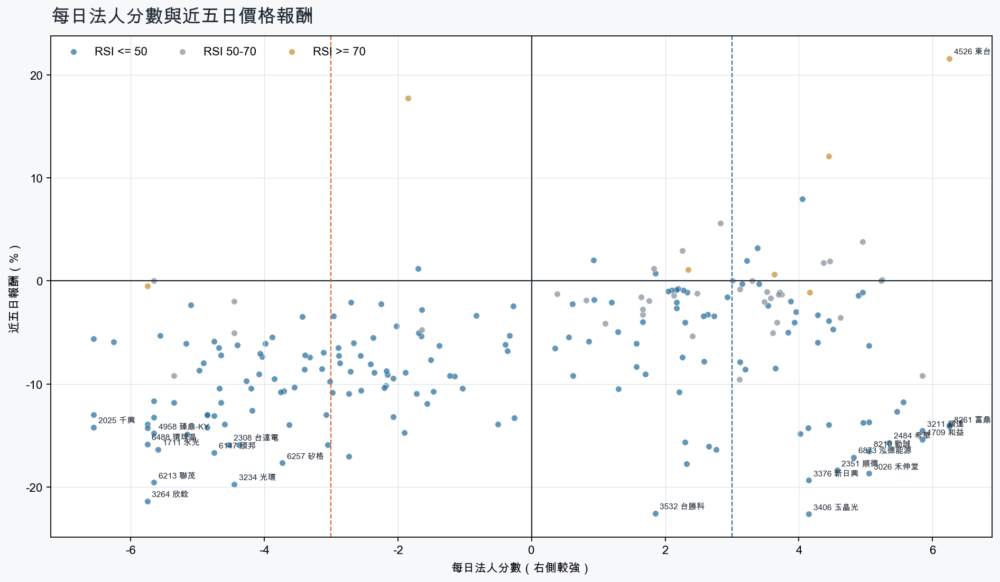
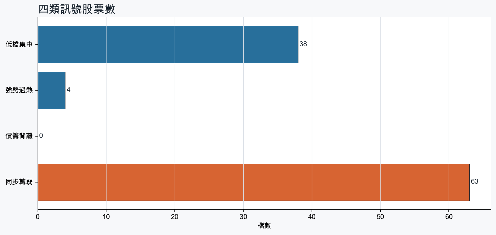
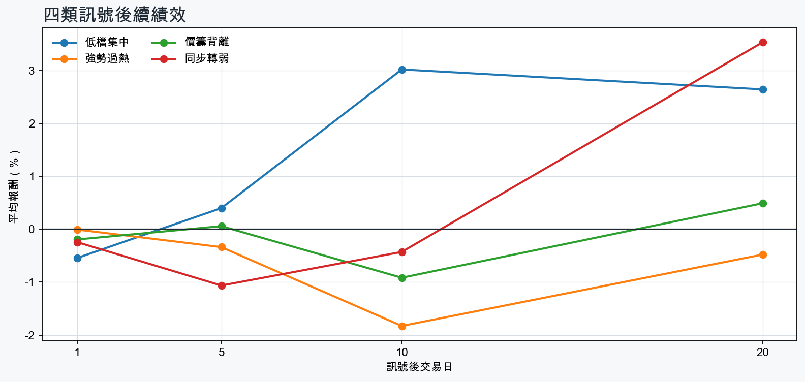

市場情緒偏空
近5日法人合計-8,706,762 張
篩選池上漲比例8.2%
籌碼好 / RSI低15 檔
籌碼差 / 價跌15 檔



EPS × PE VALUATION
法人常用的相對估值
顯示保守、基準與樂觀估值帶，不把單一數字包裝成精準目標價。
最新累計 EPS 依季數年化 × 同產業有效 P/E 的 Q25／中位數／Q75。排除本公司、非正 P/E，並以 1.5×IQR 排除離群值。估值帶是公開資料篩選值，不是法人目標價；未使用分析師預估 EPS。
MOOD × MONEY
情緒與籌碼雷達
熱度代表被討論程度；情緒分與法人方向分開計算。熱門不等於適合追價，樣本不足也不硬判多空。
| 股票 | 情緒 | 討論熱度 | 情緒 × 籌碼 | 情緒 × 基本面 |
|---|---|---|---|---|
| 2303 聯電同步轉弱 | 中性分歧 +6.2信心 100 | 1003 篇 / 434 留言 / 3 則新聞 | 高熱分歧法人分 -3.0 | 基本面與情緒分歧基本面分 +3.6 |
| 3045 台灣大強勢過熱 | 偏空 -33.3信心 85 | 881 篇 / 214 留言 / 1 則新聞 | 法人布局、市場悲觀法人分 +4.2 | 基本面佳、情緒悲觀基本面分 +1.4 |
| 2337 旺宏同步轉弱 | 中性分歧 +11.5信心 78 | 751 篇 / 89 留言 / 2 則新聞 | 高熱分歧法人分 -5.8 | 基本面與情緒分歧基本面分 +3.6 |
| 6488 環球晶同步轉弱 | 情緒高漲 +59.5信心 88 | 731 篇 / 73 留言 / 3 則新聞 | 熱門但法人撤退法人分 -5.8 | 情緒領先基本面基本面分 -1.1 |
| 2308 台達電同步轉弱 | 偏空 -34.3信心 82 | 711 篇 / 61 留言 / 3 則新聞 | 情籌雙弱法人分 -4.5 | 基本面佳、情緒悲觀基本面分 +3.6 |
| 2327 國巨*同步轉弱 | 中性分歧 +5.0信心 81 | 691 篇 / 53 留言 / 3 則新聞 | 高熱分歧法人分 -4.8 | 基本面與情緒分歧基本面分 +2.0 |
| 2412 中華電強勢過熱 | 情緒高漲 +35.2信心 71 | 681 篇 / 47 留言 / 3 則新聞 | 情籌共振法人分 +3.6 | 基本面與情緒共振基本面分 +2.0 |
| 6147 頎邦同步轉弱 | 偏多 +33.6信心 47 | 651 篇 / 47 留言 / 0 則新聞 | 熱門但法人撤退法人分 -4.8 | 基本面與情緒共振基本面分 +3.6 |
| 3264 欣銓同步轉弱 | 中性分歧 +9.9信心 30 | 380 篇 / 0 留言 / 3 則新聞 | 情籌混合法人分 -5.8 | 基本面與情緒分歧基本面分 +3.6 |
| 6770 力積電同步轉弱 | 中性分歧 +0.0信心 30 | 380 篇 / 0 留言 / 3 則新聞 | 情籌混合法人分 -5.7 | 基本面與情緒分歧基本面分 +2.0 |
| 3023 信邦同步轉弱 | 偏多 +29.7信心 30 | 380 篇 / 0 留言 / 3 則新聞 | 熱門但法人撤退法人分 -4.4 | 基本面與情緒共振基本面分 +3.6 |
| 3691 碩禾強勢過熱 | 偏多 +29.7信心 30 | 380 篇 / 0 留言 / 3 則新聞 | 情籌共振法人分 +4.5 | 基本面與情緒共振基本面分 +2.0 |
01
籌碼好 / RSI低
優先研究基本面；法人續買且價格止穩時，才適合分批觀察。
| 股票 / 確認狀態 | 每日法人分 | 浦男式近似 | 法人加速度 | RSI / 相對強弱 | 量價確認 | 融資融券 | 每週集保確認 | 基本面 | EPS × 同業 P/E 估值 | 情緒 / 情籌 | 近期消息 | 論壇討論 |
|---|---|---|---|---|---|---|---|---|---|---|---|---|
| 2609 陽明等待確認 · 96 分籌碼有訊號，但價格尚未確認 | +4.9法人 +25,668 張 / 5 天 | 接近 · 76中期均線偏多；法人籌碼偏多；法人買盤加速；留意未站月線、量能異常 | +17,796 張近3日 +24,670 / 連續 +7 日 | 40.3相對大盤 +14.5% | 量比 0.58確認分 +3.1收盤跌破20日線；成交量不足 | -%融資 - 張 / 融券 - 張 | +2.94 pp1000張 +3.04 pp | 單月營收年增 +69.9%；累計營收年增 +17.8%仍需觀察下一期財報延續性來源：公開資訊觀測站 | 不適用最新財報缺少可年化 EPS | 樣本不足 +0.0熱度 0 / 信心 0情緒樣本不足 | 近期沒有通過股票語境篩選的新聞 | 近期沒有明確提及本股的論壇樣本 |
| 3406 玉晶光可研究 · 98 分籌碼與價格確認，可列研究清單 | +4.2法人 +1,922 張 / 3 天 | 接近 · 82中期均線偏多；法人籌碼偏多；法人買盤加速；留意未站月線、動能位置非最佳 | +2,194 張近3日 +1,545 / 連續 +2 日 | 37.0相對大盤 +7.8% | 量比 1.21確認分 +4.5收盤跌破20日線 | -%融資 - 張 / 融券 - 張 | +1.87 pp1000張 +6.27 pp | 單月營收年增 +0.5%；累計營收年增 +10.1%仍需觀察下一期財報延續性來源：公開資訊觀測站 | 不適用最新財報缺少可年化 EPS | 偏空 -19.8熱度 32 / 信心 20情籌混合 | 三大法人買賣超 – 外資買超(1802)台玻、(3406)玉晶光，投信買超(2330)台積電、(2454)聯發科，法人合計賣超1464.57億元永豐金證券 · 11/03台股血洗1460點！4萬4千點沒守住、12檔千金股慘摜跌停 金像電、玉晶光摔出千金Yahoo股市 · 11/03 | 近期沒有明確提及本股的論壇樣本 |
| 2379 瑞昱可研究 · 96 分籌碼與價格確認，可列研究清單 | +4.5法人 +2,262 張 / 5 天 | 接近 · 90中期均線偏多；法人籌碼偏多；法人買盤加速；留意未站月線 | +701 張近3日 +1,927 / 連續 +10 日 | 49.4相對大盤 +10.7% | 量比 1.06確認分 +4.2收盤跌破20日線 | -%融資 - 張 / 融券 - 張 | +0.14 pp1000張 +0.95 pp | 單月營收年增 +23.4%；累計營收年增 +15.8%仍需觀察下一期財報延續性來源：公開資訊觀測站 | 不適用最新財報缺少可年化 EPS | 偏多 +29.7熱度 38 / 信心 30情籌共振 | 2379 瑞昱- 瑞昱位階低抗跌，AIPC 長線題材受矚目- 股市爆料同學會CMoney · 11/03擁瑞昱、聯詠、廣達、至上！00946連15配0.058元今最後買進日 「這檔」年化配息率突破8%Yahoo股市 · 11/03 | 近期沒有明確提及本股的論壇樣本 |
| 2607 榮運可研究 · 98 分籌碼與價格確認，可列研究清單 | +3.4法人 +1,502 張 / 5 天 | 命中 · 95站上月線；中期均線偏多；法人籌碼偏多；留意量能尚未確認 | +947 張近3日 +1,164 / 連續 +5 日 | 47.4相對大盤 +19.4% | 量比 0.87確認分 +5.8價格、量能與籌碼未見明顯弱項 | -%融資 - 張 / 融券 - 張 | -0.04 pp1000張 -0.06 pp | 單月營收年增 +64.7%；累計營收年增 +18.1%仍需觀察下一期財報延續性來源：公開資訊觀測站 | 不適用最新財報缺少可年化 EPS | 樣本不足 +0.0熱度 0 / 信心 0情緒樣本不足 | 近期沒有通過股票語境篩選的新聞 | 近期沒有明確提及本股的論壇樣本 |
| 4938 和碩等待確認 · 87 分籌碼有訊號，但價格尚未確認 | +4.3法人 +10,233 張 / 5 天 | 接近 · 83站上月線；中期均線偏多；法人籌碼偏多；留意法人買盤未加速、量能異常 | -1,398 張近3日 +5,709 / 連續 +10 日 | 47.9相對大盤 +24.2% | 量比 0.62確認分 +2.5成交量不足；法人買盤減速 | -%融資 - 張 / 融券 - 張 | +1.27 pp1000張 +1.33 pp | 單月營收年增 +86.9%；累計營收年增 +13.8%仍需觀察下一期財報延續性來源：公開資訊觀測站 | 不適用最新財報缺少可年化 EPS | 偏多 +29.7熱度 38 / 信心 30情籌共振 | AI 伺服器動能轉強 法人調高和碩獲利預估值及目標價UDN · 11/03【11:20 即時新聞】和碩(4938)小漲整理，市場聚焦AI伺服器鏈布局CMoney投資網誌 · 11/03 | 近期沒有明確提及本股的論壇樣本 |
| 3105 穩懋等待確認 · 72 分籌碼有訊號，但價格尚未確認 | +4.0法人 +18,239 張 / 2 天 | 接近 · 73中期均線偏多；法人籌碼偏多；相對大盤偏強；留意未站月線、法人買盤未加速 | -37,763 張近3日 -10,131 / 連續 -3 日 | 46.2相對大盤 +0.1% | 量比 1.04確認分 -1.5收盤跌破20日線；法人買盤減速 | +3.2%融資 +1,316 張 / 融券 +21 張 | +5.99 pp1000張 +6.21 pp | 單月營收年增 +30.0%；累計營收年增 +32.6%仍需觀察下一期財報延續性來源：公開資訊觀測站 | 不適用最新財報缺少可年化 EPS | 偏空 -29.7熱度 38 / 信心 30法人布局、市場悲觀 | 美股光通訊巨頭宣布合併 台鏈不買單！穩懋爆量跌停自由財經 · 11/03美股光通訊巨頭合併台鏈卻全挫跌？穩懋炸逾百億賣壓吞跌停 分析師這樣看Yahoo股市 · 11/03 | 近期沒有明確提及本股的論壇樣本 |
| 1808 潤隆等待確認 · 81 分籌碼有訊號，但價格尚未確認 | +4.3法人 +4,537 張 / 5 天 | 接近 · 79站上月線；中期均線偏多；法人籌碼偏多；留意法人買盤未加速、量能異常 | -8,211 張近3日 +1,144 / 連續 +10 日 | 44.4相對大盤 +19.9% | 量比 0.38確認分 +1.1成交量不足；法人買盤減速 | -%融資 - 張 / 融券 - 張 | +1.28 pp1000張 +1.38 pp | 單月營收年增 +63462.8%；累計營收年增 +14769.5%仍需觀察下一期財報延續性來源：公開資訊觀測站 | 不適用最新財報缺少可年化 EPS | 樣本不足 +0.0熱度 0 / 信心 0情緒樣本不足 | 近期沒有通過股票語境篩選的新聞 | 近期沒有明確提及本股的論壇樣本 |
| 9939 宏全等待確認 · 86 分籌碼有訊號，但價格尚未確認 | +5.0法人 +5,427 張 / 4 天 | 接近 · 62法人籌碼偏多；法人買盤加速；買超具延續性；留意未站月線、中期均線未翻多 | +2,143 張近3日 +4,264 / 連續 +4 日 | 30.3相對大盤 +6.4% | 量比 2.12確認分 +2.6收盤跌破20日線；20日線低於60日線 | -%融資 - 張 / 融券 - 張 | +0.36 pp1000張 +0.15 pp | 單月營收年增 +3.6%；累計營收年增 +3.3%仍需觀察下一期財報延續性來源：公開資訊觀測站 | 不適用最新財報缺少可年化 EPS | 樣本不足 +9.9熱度 23 / 信心 10情緒樣本不足 | 《外資買超22-6》南亞科(905)、光罩(863)、宏全(852)富聯網 · 11/03 | 近期沒有明確提及本股的論壇樣本 |
| 3293 鈊象等待確認 · 80 分籌碼有訊號，但價格尚未確認 | +3.5法人 +1,755 張 / 4 天 | 接近 · 74中期均線偏多；法人籌碼偏多；買超具延續性；留意未站月線、法人買盤未加速 | -50 張近3日 +966 / 連續 +4 日 | 41.8相對大盤 +8.7% | 量比 0.75確認分 +1.5收盤跌破20日線；法人買盤減速 | +0.7%融資 +13 張 / 融券 -2 張 | +1.63 pp1000張 +1.18 pp | 單月營收年增 +25.3%；累計營收年增 +18.9%仍需觀察下一期財報延續性來源：公開資訊觀測站 | 不適用最新財報缺少可年化 EPS | 樣本不足 +0.0熱度 0 / 信心 0情緒樣本不足 | 近期沒有通過股票語境篩選的新聞 | 近期沒有明確提及本股的論壇樣本 |
| 2034 允強可研究 · 82 分籌碼與價格確認，可列研究清單 | +3.2法人 +1,780 張 / 4 天 | 接近 · 71中期均線偏多；法人籌碼偏多；法人買盤加速；留意未站月線、量能尚未確認 | +1,346 張近3日 +1,892 / 連續 +4 日 | 33.3相對大盤 +3.8% | 量比 0.89確認分 +2.7收盤跌破20日線 | -%融資 - 張 / 融券 - 張 | +1.41 pp1000張 +1.07 pp | 單月營收年增 +47.4%；累計營收年增 +4.7%仍需觀察下一期財報延續性來源：公開資訊觀測站 | 不適用最新財報缺少可年化 EPS | 樣本不足 +9.9熱度 23 / 信心 10情緒樣本不足 | 《外資買超22-22》允強(108)、貿聯KY(107)、國精化(104)富聯網 · 11/03 | 近期沒有明確提及本股的論壇樣本 |
| 4916 事欣科等待確認 · 66 分籌碼有訊號，但價格尚未確認 | +4.5法人 +3,605 張 / 3 天 | 接近 · 69中期均線偏多；法人籌碼偏多；買超具延續性；留意未站月線、法人買盤未加速 | -4,505 張近3日 -365 / 連續 -1 日 | 45.0相對大盤 +2.9% | 量比 0.85確認分 -3.0收盤跌破20日線；法人買盤減速 | -%融資 - 張 / 融券 - 張 | +5.92 pp1000張 +4.32 pp | 單月營收年增 +70.3%；累計營收年增 +63.0%仍需觀察下一期財報延續性來源：公開資訊觀測站 | 不適用最新財報缺少可年化 EPS | 樣本不足 +0.0熱度 23 / 信心 10情緒樣本不足 | 國防航太低軌衛星旺，事欣科明年營收衝歷史次高- 新聞MoneyDJ · 10/16 | 近期沒有明確提及本股的論壇樣本 |
| 3324 雙鴻等待確認 · 67 分籌碼有訊號，但價格尚未確認 | +5.0法人 +1,329 張 / 3 天 | 接近 · 68中期均線偏多；法人籌碼偏多；買超具延續性；留意未站月線、法人買盤未加速 | -74 張近3日 +518 / 連續 -1 日 | 37.8相對大盤 -1.9% | 量比 1.98確認分 -1.9收盤跌破20日線；法人買盤減速 | -7.3%融資 -402 張 / 融券 +19 張 | -1.17 pp1000張 +4.77 pp | 單月營收年增 +23.2%；累計營收年增 +72.4%仍需觀察下一期財報延續性來源：公開資訊觀測站 | 不適用最新財報缺少可年化 EPS | 中性分歧 +0.0熱度 38 / 信心 30情籌混合 | ASIC 液冷商機爆發，外資齊升奇鋐、雙鴻目標價TechNews 科技新報 · 11/03三大法人買賣超 – 外資買超(2317)鴻海、(3324)雙鴻，投信買超(2330)台積電、(2454)聯發科，法人合計賣超526.92億元永豐金證券 · 11/03 | 近期沒有明確提及本股的論壇樣本 |
| 3035 智原等待確認 · 64 分籌碼有訊號，但價格尚未確認 | +3.1法人 +6,359 張 / 1 天 | 接近 · 59中期均線偏多；法人籌碼偏多；量價健康；留意未站月線、法人買盤未加速 | -10,852 張近3日 -2,381 / 連續 -3 日 | 49.6相對大盤 -0.9% | 量比 1.47確認分 -1.7收盤跌破20日線；法人買盤減速 | -%融資 - 張 / 融券 - 張 | +6.04 pp1000張 +5.02 pp | 單月營收年增 +4.4%；2026 Q3 累計 EPS 2.23累計營收年增 -37.0%；2026 Q3 累計營益率 6.1%來源：公開資訊觀測站 | 基準 NT$ 66.42估值帶 44.18–110.8現價 191.0 · 高於估值帶 · 距基準 -65.2%2026 Q3 累計 EPS 2.23 → 年化 2.97半導體同業 P/E 14.86／22.34／37.26 · n=147 · 信心較高以 Q3 累計 EPS 年化，不等同分析師全年預估來源：TWSE／TPEx 每日本益比 | 中性分歧 +0.0熱度 38 / 信心 30情籌混合 | 法說報喜智原、穩懋權證旺- 日報工商時報 · 10/303035 智原 - 智障員外規則漲停板按律要跌跌回去的 - 股市爆料同學會CMoney · 11/01 | 近期沒有明確提及本股的論壇樣本 |
| 2451 創見等待確認 · 64 分籌碼有訊號，但價格尚未確認 | +4.0法人 +3,247 張 / 3 天 | 接近 · 73法人籌碼偏多；買超具延續性；明顯強於大盤；留意未站月線、中期均線未翻多 | -5,014 張近3日 -407 / 連續 -1 日 | 48.0相對大盤 +4.6% | 量比 1.03確認分 -1.9收盤跌破20日線；20日線低於60日線；法人買盤減速 | -%融資 - 張 / 融券 - 張 | +0.59 pp1000張 +1.40 pp | 單月營收年增 +290.4%；累計營收年增 +370.0%仍需觀察下一期財報延續性來源：公開資訊觀測站 | 不適用最新財報缺少可年化 EPS | 偏多 +19.8熱度 32 / 信心 20情籌混合 | 《外資買超22-17》創見(160)、建準(156)、麗正(155)富聯網 · 11/032451 創見 - 【本週復盤】記憶體模組震盪，「3檔概念股」近5日仍有撐？ - 股市爆料同學會CMoney · 10/31 | 近期沒有明確提及本股的論壇樣本 |
| 6026 福邦證等待確認 · 70 分籌碼有訊號，但價格尚未確認 | +3.2法人 +2,748 張 / 3 天 | 接近 · 74中期均線偏多；法人籌碼偏多；買超具延續性；留意未站月線、法人買盤未加速 | -2,659 張近3日 +91 / 連續 -2 日 | 49.2相對大盤 +8.6% | 量比 1.41確認分 +0.5收盤跌破20日線；法人買盤減速；流動性偏低 | +0.3%融資 +9 張 / 融券 +0 張 | +0.20 pp1000張 +1.48 pp | 累計營收年增 +99.7%；2026 Q3 累計 EPS 2.94單月營收年增 -10.3%來源：公開資訊觀測站 | 基準 NT$ 50.76估值帶 32.18–62.48現價 15.65 · 低於估值帶 · 距基準 +224.4%2026 Q3 累計 EPS 2.94 → 年化 3.92金融保險同業 P/E 8.21／12.95／15.94 · n=39 · 信心較高以 Q3 累計 EPS 年化，不等同分析師全年預估來源：TWSE／TPEx 每日本益比 | 樣本不足 +0.0熱度 0 / 信心 0情緒樣本不足 | 近期沒有通過股票語境篩選的新聞 | 近期沒有明確提及本股的論壇樣本 |
02
籌碼好 / RSI高
趨勢強但不追價，等待量縮、RSI降溫或回測支撐。
| 股票 / 確認狀態 | 每日法人分 | 浦男式近似 | 法人加速度 | RSI / 相對強弱 | 量價確認 | 融資融券 | 每週集保確認 | 基本面 | EPS × 同業 P/E 估值 | 情緒 / 情籌 | 近期消息 | 論壇討論 |
|---|---|---|---|---|---|---|---|---|---|---|---|---|
| 3691 碩禾等待拉回 · 100 分等拉回，不追價 | +4.5法人 +1,638 張 / 3 天 | 命中 · 96站上月線；中期均線偏多；法人籌碼偏多；留意動能位置非最佳 | +1,659 張近3日 +1,682 / 連續 +3 日 | 70.9相對大盤 +29.0% | 量比 1.51確認分 +6.5價格、量能與籌碼未見明顯弱項 | +2.8%融資 +160 張 / 融券 +147 張 | +2.03 pp1000張 +4.17 pp | 單月營收年增 +64.2%；累計營收年增 +112.3%仍需觀察下一期財報延續性來源：公開資訊觀測站 | 不適用最新財報缺少可年化 EPS | 偏多 +29.7熱度 38 / 信心 30情籌共振 | 碩禾9月獲利超越Q2；伺服器用漿料需求旺- 新聞MoneyDJ · 11/03大世科9月 EPS 0.47元 碩禾0.42元經濟日報 · 11/01 | 近期沒有明確提及本股的論壇樣本 |
| 4526 東台等待拉回 · 97 分等拉回，不追價 | +6.2法人 +10,826 張 / 5 天 | 接近 · 78站上月線；中期均線偏多；法人籌碼偏多；留意法人買盤未加速、量能尚未確認 | -9,532 張近3日 +5,640 / 連續 +8 日 | 88.5相對大盤 +70.5% | 量比 0.68確認分 +1.8法人買盤減速 | -%融資 - 張 / 融券 - 張 | +9.72 pp1000張 +9.61 pp | 單月營收年增 +81.0%；累計營收年增 +11.0%仍需觀察下一期財報延續性來源：公開資訊觀測站 | 不適用最新財報缺少可年化 EPS | 偏多 +29.7熱度 38 / 信心 30情籌共振 | 【13:06 即時新聞】東台(4526)平盤整理，外資與主力連日加碼成盤中焦點CMoney投資網誌 · 11/03台股3檔「抓去關」新名單 東台明起處置到11／9ETtoday財經雲 · 10/29 | 近期沒有明確提及本股的論壇樣本 |
| 3045 台灣大等待拉回 · 94 分等拉回，不追價 | +4.2法人 +13,263 張 / 5 天 | 命中 · 85站上月線；中期均線偏多；法人籌碼偏多；留意法人買盤未加速、動能位置非最佳 | -118 張近3日 +7,713 / 連續 +10 日 | 75.0相對大盤 +19.4% | 量比 1.26確認分 +4.5法人買盤減速 | -%融資 - 張 / 融券 - 張 | +0.28 pp1000張 +0.35 pp | 單月營收年增 +10.3%；累計營收年增 +5.4%仍需觀察下一期財報延續性來源：公開資訊觀測站 | 不適用最新財報缺少可年化 EPS | 偏空 -33.3熱度 88 / 信心 85法人布局、市場悲觀 | 【11:56 即時新聞】台灣大(3045)平盤整理，市場聚焦BNPL與電信科技布局CMoney投資網誌 · 11/03 | [標的] 台灣大盤 附停損單 含資訊整理PTT Stock · 10-31 · 214 留言 |
| 2412 中華電等待拉回 · 96 分等拉回，不追價 | +3.6法人 +16,979 張 / 5 天 | 接近 · 90站上月線；中期均線偏多；法人籌碼偏多；留意RSI過熱 | +3,351 張近3日 +10,894 / 連續 +10 日 | 82.4相對大盤 +19.3% | 量比 0.94確認分 +5.0價格、量能與籌碼未見明顯弱項 | -%融資 - 張 / 融券 - 張 | +0.49 pp1000張 +0.50 pp | 單月營收年增 +20.9%；累計營收年增 +10.8%仍需觀察下一期財報延續性來源：公開資訊觀測站 | 不適用最新財報缺少可年化 EPS | 情緒高漲 +35.2熱度 68 / 信心 71情籌共振 | 【12:37 即時新聞】中華電(2412)盤中平盤高檔整理，雙11資費活動成盤中焦點CMoney投資網誌 · 11/03中華電 股價逆勢創高中時新聞網 · 11/01 | Re: [標的] 2412中華電信爬到高點PTT Stock · 10-30 · 47 留言 |
03
籌碼差 / 股價上漲
可能是事件行情或軋空；沒有籌碼改善前避免追高。
今日沒有股票同時符合本組的完整條件。
04
籌碼差 / 股價下跌
籌碼與價格同弱，原則上迴避，等待法人與大戶同時回補。
| 股票 / 確認狀態 | 每日法人分 | 浦男式近似 | 法人加速度 | RSI / 相對強弱 | 量價確認 | 融資融券 | 每週集保確認 | 基本面 | EPS × 同業 P/E 估值 | 情緒 / 情籌 | 近期消息 | 論壇討論 |
|---|---|---|---|---|---|---|---|---|---|---|---|---|
| 3264 欣銓風險警示 · 19 分迴避，等待籌碼翻正 | -5.8法人 -18,807 張 / 0 天 | 未命中 · 42中期均線偏多；法人買盤加速；基本面有支撐；留意未站月線、法人籌碼偏弱 | +10,216 張近3日 -3,661 / 連續 -5 日 | 22.1相對大盤 -10.0% | 量比 0.72確認分 -1.8收盤跌破20日線；近20日弱於大盤 | +1.6%融資 +227 張 / 融券 +26 張 | -6.87 pp1000張 -7.43 pp | 單月營收年增 +46.9%；累計營收年增 +35.4%；2026 Q3 累計 EPS 7.49仍需觀察下一期財報延續性來源：公開資訊觀測站 | 基準 NT$ 227.7估值帶 148.4–377.8現價 195.0 · 估值帶內 · 距基準 +16.8%2026 Q3 累計 EPS 7.49 → 年化 9.99半導體同業 P/E 14.86／22.80／37.83 · n=147 · 信心較高以 Q3 累計 EPS 年化，不等同分析師全年預估來源：TWSE／TPEx 每日本益比 | 中性分歧 +9.9熱度 38 / 信心 30情籌混合 | 欣銓Q3獲利估創高 Q4續向上 - 新聞MoneyDJ · 10/14《法人機構上櫃賣超前20名2-2》欣銓(-1,395)、金居(-1,286)富聯網 · 11/03 | 近期沒有明確提及本股的論壇樣本 |
| 3234 光環風險警示 · 20 分迴避，等待籌碼翻正 | -4.5法人 -1,854 張 / 2 天 | 未命中 · 42中期均線偏多；法人買盤加速；基本面有支撐；留意未站月線、法人籌碼偏弱 | +309 張近3日 -482 / 連續 +2 日 | 34.2相對大盤 -14.6% | 量比 0.68確認分 -1.8收盤跌破20日線；近20日弱於大盤 | -%融資 +0 張 / 融券 +0 張 | -5.45 pp1000張 -4.65 pp | 單月營收年增 +140.3%；累計營收年增 +38.1%仍需觀察下一期財報延續性來源：公開資訊觀測站 | 不適用最新財報缺少可年化 EPS | 樣本不足 -9.9熱度 23 / 信心 10情緒樣本不足 | 矽光子綠光罩頂！聯亞、光環、全新等4檔一度摔跌停 「LED封裝廠」遭列注意股逆勢走高Yahoo股市 · 10/30 | 近期沒有明確提及本股的論壇樣本 |
| 6213 聯茂風險警示 · 33 分迴避，等待籌碼翻正 | -5.7法人 -5,403 張 / 1 天 | 未命中 · 51中期均線偏多；法人買盤加速；量價健康；留意未站月線、法人籌碼偏弱 | +4,020 張近3日 -1,778 / 連續 +1 日 | 31.6相對大盤 -1.7% | 量比 1.63確認分 +0.6收盤跌破20日線 | -%融資 - 張 / 融券 - 張 | -1.09 pp1000張 -1.30 pp | 單月營收年增 +110.7%；累計營收年增 +50.1%仍需觀察下一期財報延續性來源：公開資訊觀測站 | 不適用最新財報缺少可年化 EPS | 中性分歧 +0.0熱度 32 / 信心 20情籌混合 | 最狂不是聯茂！「這檔」90天暴漲589%、東台6天飆39% 15檔注意股名單一次看Yahoo股市 · 11/03冠西電飆29%抓去關！明起2分鐘撮合 聯茂5度列注意股拉警報ETtoday財經雲 · 11/03 | 近期沒有明確提及本股的論壇樣本 |
| 6488 環球晶風險警示 · 0 分迴避，等待籌碼翻正 | -5.8法人 -6,616 張 / 0 天 | 未命中 · 15量價健康；流動性足夠；留意未站月線、中期均線未翻多 | -1,232 張近3日 -3,952 / 連續 -10 日 | 16.3相對大盤 -32.0% | 量比 1.00確認分 -5.0收盤跌破20日線；20日線低於60日線；近20日弱於大盤；法人買盤減速 | +1.3%融資 +153 張 / 融券 -11 張 | -5.86 pp1000張 -7.48 pp | 尚無明確成長訊號單月營收年增 -13.1%；累計營收年增 -4.4%來源：公開資訊觀測站 | 不適用最新財報缺少可年化 EPS | 情緒高漲 +59.5熱度 73 / 信心 88熱門但法人撤退 | 環球晶前3季每股賺15元逼近去年全年！上半年配息6元 獲美光包辦5億美元CBYahoo股市 · 11/03環球晶配息6元、深化與美光合作！徐秀蘭：半導體成長仍有支撐遠見雜誌 · 11/03 | [新聞] 環球晶Q3獲利15億、季減6成 前三季EPS達1PTT Stock · 11-03 · 73 留言 |
| 8150 南茂風險警示 · 0 分迴避，等待籌碼翻正 | -5.8法人 -12,103 張 / 0 天 | 未命中 · 35中期均線偏多；基本面有支撐；流動性足夠；留意未站月線、法人籌碼偏弱 | -4,736 張近3日 -8,342 / 連續 -5 日 | 19.2相對大盤 -23.8% | 量比 0.65確認分 -5.8收盤跌破20日線；近20日弱於大盤；法人買盤減速 | -%融資 - 張 / 融券 - 張 | -4.43 pp1000張 -5.05 pp | 單月營收年增 +33.8%；累計營收年增 +30.5%仍需觀察下一期財報延續性來源：公開資訊觀測站 | 不適用最新財報缺少可年化 EPS | 樣本不足 +0.0熱度 0 / 信心 0情緒樣本不足 | 近期沒有通過股票語境篩選的新聞 | 近期沒有明確提及本股的論壇樣本 |
| 2337 旺宏風險警示 · 24 分迴避，等待籌碼翻正 | -5.8法人 -63,458 張 / 0 天 | 未命中 · 37法人買盤加速；量價健康；基本面有支撐；留意未站月線、中期均線未翻多 | +29,923 張近3日 -14,548 / 連續 -5 日 | 30.1相對大盤 -17.2% | 量比 1.63確認分 -1.0收盤跌破20日線；20日線低於60日線；近20日弱於大盤 | -%融資 - 張 / 融券 - 張 | -4.14 pp1000張 -3.81 pp | 單月營收年增 +188.2%；累計營收年增 +154.5%；2026 Q3 累計 EPS 10.34仍需觀察下一期財報延續性來源：公開資訊觀測站 | 基準 NT$ 314.3估值帶 206.2–521.5現價 88.30 · 低於估值帶 · 距基準 +256.0%2026 Q3 累計 EPS 10.34 → 年化 13.79半導體同業 P/E 14.96／22.80／37.83 · n=147 · 信心較高以 Q3 累計 EPS 年化，不等同分析師全年預估來源：TWSE／TPEx 每日本益比 | 中性分歧 +11.5熱度 75 / 信心 78高熱分歧 | 旺宏擴產評估購併、合作，接班人選已定- 新聞MoneyDJ · 11/03旺宏(2337)單季賺109.5億元、毛利率達70.5%！這一季靠漲價，下一波成長靠什麼？優分析UAnalyze · 11/03 | [新聞] 旺宏吳敏求：記憶體產業一路旺到2030年PTT Stock · 11-02 · 89 留言 |
| 6147 頎邦風險警示 · 28 分迴避，等待籌碼翻正 | -4.8法人 -7,763 張 / 2 天 | 未命中 · 42中期均線偏多；法人買盤加速；基本面有支撐；留意未站月線、法人籌碼偏弱 | +3,988 張近3日 -754 / 連續 -2 日 | 31.7相對大盤 -12.2% | 量比 0.74確認分 -1.8收盤跌破20日線；近20日弱於大盤 | -0.4%融資 -132 張 / 融券 -76 張 | -1.41 pp1000張 -2.18 pp | 單月營收年增 +27.9%；累計營收年增 +24.3%；2026 Q3 累計 EPS 4.33仍需觀察下一期財報延續性來源：公開資訊觀測站 | 基準 NT$ 129.0估值帶 85.79–218.4現價 172.5 · 估值帶內 · 距基準 -25.2%2026 Q3 累計 EPS 4.33 → 年化 5.77半導體同業 P/E 14.86／22.34／37.83 · n=147 · 信心較高以 Q3 累計 EPS 年化，不等同分析師全年預估來源：TWSE／TPEx 每日本益比 | 偏多 +33.6熱度 65 / 信心 47熱門但法人撤退 | 近期沒有通過股票語境篩選的新聞 | [情報] 6147 頎邦 第三季財報 （年增111.58%PTT Stock · 10-30 · 47 留言 |
| 2303 聯電風險警示 · 33 分迴避，等待籌碼翻正 | -3.0法人 -163,057 張 / 3 天 | 未命中 · 42法人買盤加速；買超具延續性；量價健康；留意未站月線、中期均線未翻多 | +129,474 張近3日 -16,833 / 連續 +2 日 | 13.3相對大盤 -25.8% | 量比 1.17確認分 -1.0收盤跌破20日線；20日線低於60日線；近20日弱於大盤 | -%融資 - 張 / 融券 - 張 | -5.46 pp1000張 -5.43 pp | 單月營收年增 +27.2%；累計營收年增 +16.1%；2026 Q3 累計 EPS 6.00仍需觀察下一期財報延續性來源：公開資訊觀測站 | 基準 NT$ 182.4估值帶 118.9–302.6現價 103.0 · 低於估值帶 · 距基準 +77.1%2026 Q3 累計 EPS 6.00 → 年化 8.00半導體同業 P/E 14.86／22.80／37.83 · n=147 · 信心較高以 Q3 累計 EPS 年化，不等同分析師全年預估來源：TWSE／TPEx 每日本益比 | 中性分歧 +6.2熱度 100 / 信心 100高熱分歧 | 2303 聯電 - 11/3(二) 投信 - 股市爆料同學會CMoney · 11/03聯電(2303)、友達(2409)雙破底可以買？股價跌3成多墜入熊市、外資賣超它56萬張…專家勸3訊號再買今周刊 · 11/03 | [新聞] 聯電奪光通訊重量級大單 價格為傳統製程PTT Stock · 11-02 · 161 留言[新聞] 聯電股價打跌停免驚?大摩看好喊加碼 目標PTT Stock · 10-30 · 142 留言 |
| 6257 矽格風險警示 · 20 分迴避，等待籌碼翻正 | -3.7法人 -2,518 張 / 1 天 | 未命中 · 37中期均線偏多；法人買盤加速；基本面有支撐；留意未站月線、法人籌碼偏弱 | +260 張近3日 -1,148 / 連續 +1 日 | 11.1相對大盤 -15.4% | 量比 0.55確認分 -3.7收盤跌破20日線；近20日弱於大盤；成交量不足 | -%融資 - 張 / 融券 - 張 | -0.88 pp1000張 -0.81 pp | 單月營收年增 +26.3%；累計營收年增 +21.2%仍需觀察下一期財報延續性來源：公開資訊觀測站 | 不適用最新財報缺少可年化 EPS | 樣本不足 +0.0熱度 0 / 信心 0情緒樣本不足 | 近期沒有通過股票語境篩選的新聞 | 近期沒有明確提及本股的論壇樣本 |
| 6770 力積電風險警示 · 0 分迴避，等待籌碼翻正 | -5.7法人 -62,351 張 / 1 天 | 未命中 · 36量價健康；基本面有支撐；流動性足夠；留意未站月線、中期均線未翻多 | -154,515 張近3日 -77,115 / 連續 -4 日 | 38.2相對大盤 -10.9% | 量比 1.09確認分 -5.0收盤跌破20日線；20日線低於60日線；近20日弱於大盤；法人買盤減速 | -%融資 - 張 / 融券 - 張 | -4.14 pp1000張 -4.05 pp | 單月營收年增 +94.0%；累計營收年增 +52.5%仍需觀察下一期財報延續性來源：公開資訊觀測站 | 不適用最新財報缺少可年化 EPS | 中性分歧 +0.0熱度 38 / 信心 30情籌混合 | 2303 聯電 - 6770力積電｜恐慌性賣壓與停損盤湧現- 股市爆料同學會CMoney · 11/036770 力積電- 幾年前台幣匯率波動非常受到產業重視非常喜歡貶值，升值太多大... - 股市爆料同學會CMoney · 11/03 | 近期沒有明確提及本股的論壇樣本 |
| 1711 永光風險警示 · 2 分迴避，等待籌碼翻正 | -5.6法人 -4,567 張 / 0 天 | 未命中 · 30中期均線偏多；基本面有支撐；流動性足夠；留意未站月線、法人籌碼偏弱 | -2,385 張近3日 -3,182 / 連續 -5 日 | 31.3相對大盤 -8.3% | 量比 0.58確認分 -6.3收盤跌破20日線；近20日弱於大盤；成交量不足；法人買盤減速 | -%融資 - 張 / 融券 - 張 | +0.73 pp1000張 +0.78 pp | 單月營收年增 +24.0%；累計營收年增 +13.0%仍需觀察下一期財報延續性來源：公開資訊觀測站 | 不適用最新財報缺少可年化 EPS | 樣本不足 +0.0熱度 0 / 信心 0情緒樣本不足 | 近期沒有通過股票語境篩選的新聞 | 近期沒有明確提及本股的論壇樣本 |
| 2308 台達電風險警示 · 14 分迴避，等待籌碼翻正 | -4.5法人 -18,031 張 / 0 天 | 未命中 · 30量價健康；基本面有支撐；流動性足夠；留意未站月線、中期均線未翻多 | -5,899 張近3日 -13,295 / 連續 -10 日 | 14.2相對大盤 -22.2% | 量比 1.32確認分 -5.0收盤跌破20日線；20日線低於60日線；近20日弱於大盤；法人買盤減速 | -%融資 - 張 / 融券 - 張 | -0.99 pp1000張 -0.87 pp | 單月營收年增 +14.6%；累計營收年增 +37.2%；2026 Q3 累計 EPS 26.64仍需觀察下一期財報延續性來源：公開資訊觀測站 | 基準 NT$ 791.7估值帶 548.4–1,279現價 1,270 · 估值帶內 · 距基準 -37.7%2026 Q3 累計 EPS 26.64 → 年化 35.52電子零組件同業 P/E 15.44／22.29／36.01 · n=145 · 信心較高以 Q3 累計 EPS 年化，不等同分析師全年預估來源：TWSE／TPEx 每日本益比 | 偏空 -34.3熱度 71 / 信心 82情籌雙弱 | 台達電股價腰斬，跌出上市公司市值第三名遭鴻海超車TechNews 科技新報 · 11/031圖懂》聯發科、鴻海、台達電...電子3王翻紅台股警報除？老手曝還欠「這隻腳」：43K可能還會來- 上市櫃旺得富理財網 · 11/03 | [新聞] 1表看》台達電4次暴跌逾25％ 從2年→59天PTT Stock · 11-02 · 61 留言 |
| 3037 欣興風險警示 · 11 分迴避，等待籌碼翻正 | -5.2法人 -10,666 張 / 0 天 | 未命中 · 40中期均線偏多；量價健康；基本面有支撐；留意未站月線、法人籌碼偏弱 | -3,688 張近3日 -7,410 / 連續 -6 日 | 25.4相對大盤 -20.4% | 量比 1.73確認分 -5.0收盤跌破20日線；近20日弱於大盤；法人買盤減速 | -%融資 - 張 / 融券 - 張 | -0.95 pp1000張 -1.30 pp | 單月營收年增 +64.7%；累計營收年增 +37.7%；2026 Q3 累計 EPS 17.85仍需觀察下一期財報延續性來源：公開資訊觀測站 | 基準 NT$ 529.1估值帶 366.8–851.8現價 902.0 · 高於估值帶 · 距基準 -41.3%2026 Q3 累計 EPS 17.85 → 年化 23.80電子零組件同業 P/E 15.41／22.23／35.79 · n=144 · 信心較高以 Q3 累計 EPS 年化，不等同分析師全年預估來源：TWSE／TPEx 每日本益比 | 偏空 -19.8熱度 32 / 信心 20情籌混合 | 3037 欣興 - 它馬的 台股跌的很測底 大家是否一樣 我的載板兄弟跌到跌停... - 股市爆料同學會CMoney · 11/03EPS一表看》欣興、南電、景碩、華通、健鼎…5檔PCB 法人認了台股超跌快撿2檔：它目標價加43％ - 上市櫃旺得富理財網 · 11/03 | 近期沒有明確提及本股的論壇樣本 |
| 3023 信邦風險警示 · 35 分迴避，等待籌碼翻正 | -4.4法人 -2,120 張 / 1 天 | 未命中 · 37法人買盤加速；量價健康；基本面有支撐；留意未站月線、中期均線未翻多 | +2,066 張近3日 -733 / 連續 -2 日 | 7.0相對大盤 -13.4% | 量比 1.40確認分 -1.0收盤跌破20日線；20日線低於60日線；近20日弱於大盤 | -%融資 - 張 / 融券 - 張 | -0.85 pp1000張 -0.07 pp | 單月營收年增 +25.5%；累計營收年增 +15.2%；2026 Q3 累計 EPS 11.16仍需觀察下一期財報延續性來源：公開資訊觀測站 | 基準 NT$ 333.3估值帶 229.8–546.4現價 237.5 · 估值帶內 · 距基準 +40.3%2026 Q3 累計 EPS 11.16 → 年化 14.88電子零組件同業 P/E 15.44／22.40／36.72 · n=145 · 信心較高以 Q3 累計 EPS 年化，不等同分析師全年預估來源：TWSE／TPEx 每日本益比 | 偏多 +29.7熱度 38 / 信心 30熱門但法人撤退 | 信邦10月營收年增32% 連七個月創高台視全球資訊網 · 11/03信邦10月營收33.88億元 連7個月創單月歷史新高鉅亨網 · 11/03 | 近期沒有明確提及本股的論壇樣本 |
| 2327 國巨*風險警示 · 4 分迴避，等待籌碼翻正 | -4.8法人 -21,855 張 / 1 天 | 未命中 · 30量價健康；基本面有支撐；流動性足夠；留意未站月線、中期均線未翻多 | -36,924 張近3日 -26,240 / 連續 -4 日 | 27.2相對大盤 -17.2% | 量比 1.12確認分 -5.0收盤跌破20日線；20日線低於60日線；近20日弱於大盤；法人買盤減速 | -%融資 - 張 / 融券 - 張 | -3.56 pp1000張 -4.12 pp | 單月營收年增 +46.1%；累計營收年增 +36.3%仍需觀察下一期財報延續性來源：公開資訊觀測站 | 不適用最新財報缺少可年化 EPS | 中性分歧 +5.0熱度 69 / 信心 81高熱分歧 | 2327 國巨* - 從7月到10月 反彈的不到200點 跌倒是很積極 已破前低 ... - 股市爆料同學會CMoney · 11/03國巨*股價跌破前低456.5元 股民嘆：奪魂鋸變斷魂鋸自由財經 · 11/03 | [標的] 2327 國巨 聖誕節 多PTT Stock · 10-30 · 53 留言 |
BACKTEST
長期規律追蹤
每次訊號後自動補算1、5、10、20個交易日報酬；樣本不足時不做結論。

| 訊號組別 | 1日 | 5日 | 10日 | 20日 |
|---|---|---|---|---|
| 低檔集中 | -0.54%勝率 43% / n=356 | +0.40%勝率 48% / n=271 | +3.02%勝率 52% / n=225 | +2.65%勝率 51% / n=194 |
| 強勢過熱 | -0.01%勝率 44% / n=1202 | -0.34%勝率 45% / n=1142 | -1.83%勝率 39% / n=984 | -0.48%勝率 46% / n=598 |
| 價籌背離 | -0.19%勝率 42% / n=925 | +0.06%勝率 43% / n=886 | -0.92%勝率 35% / n=842 | +0.49%勝率 43% / n=585 |
| 同步轉弱 | -0.24%勝率 44% / n=2321 | -1.06%勝率 39% / n=2097 | -0.43%勝率 44% / n=1758 | +3.54%勝率 55% / n=1254 |
SENTIMENT
市場消息溫度
新聞與公開論壇只作為情緒代理變數；反諷、同溫層和熱門事件都可能造成偏差，因此同步顯示樣本與信心度。
- 外資投信攜手提款 砍「這記憶體大廠」1.4萬張！37萬股東含淚吃草仔粿 - 三立新聞網SETN.com三立新聞網SETN.com
- 台股崩跌逾1,600點！外資連四賣狂砍1,073億期貨空單也逼近9.2萬口| 財經 - Newtalk新聞Newtalk新聞
- 三大法人》狂砍1464億元！外資連4賣、單日提款逾千億，投信連16買仍難擋台股崩跌1612點 | 下班經濟學 | 財經 - 風傳媒風傳媒
- 外資投信攜手提款 砍這記憶體廠1.4萬張 - 鏡週刊Mirror Media鏡週刊Mirror Media
- 外資一天狂砍1124億元！台股失守半年線 投信連14買能擋住賣壓？ - 理財周刊理財周刊
- 台股暴跌1612點史上第7大跌點！外資提款1073億元、投信逆勢買超199億 - Yahoo新聞Yahoo新聞
- 外資再砍735億元、投信大買361億元！台股失守 45K 三大法人賣超526億元 - 經濟日報經濟日報
- 台股慘跌1612點！外資大砍1464億 刷新歷史第8大賣超 - TVBS新聞網TVBS新聞網